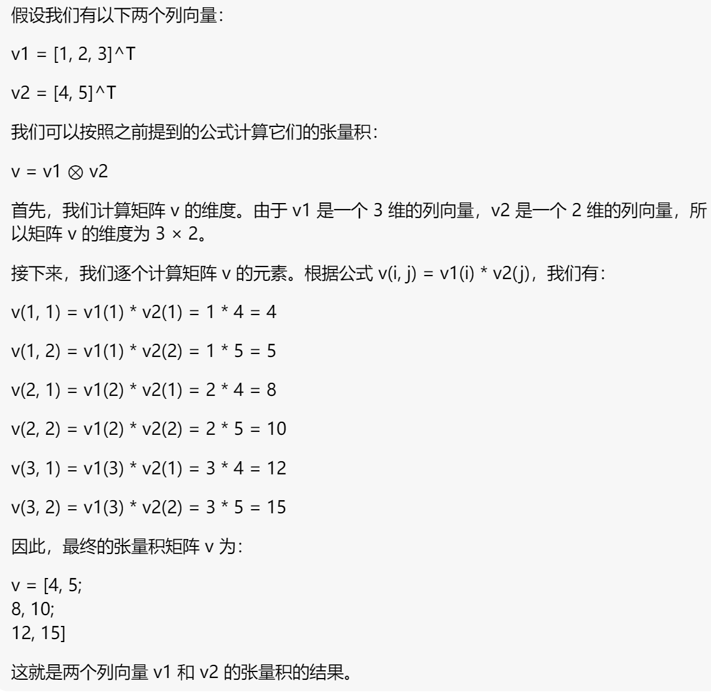

一些能用上的数学知识¶
张量积⊗
两个列向量的张量积，也称为外积或叉积，可以通过以下方式计算：
假设有两个列向量 v1 和 v2，其中 v1 的维度为 m，v2 的维度为 n。它们的张量积 v = v1 ⊗ v2 的结果是一个 m × n 的矩阵。矩阵 v 的元素根据以下公式计算：
v(i, j) = v1(i) * v2(j) 其中，v(i, j) 表示矩阵 v 的第 i 行、第 j 列的元素，v1(i) 表示 v1 的第 i 个元素，v2(j) 表示 v2 的第 j 个元素。换句话说，矩阵 v 的每个元素都等于 v1 的对应元素与 v2 的对应元素的乘积。
举个栗子 